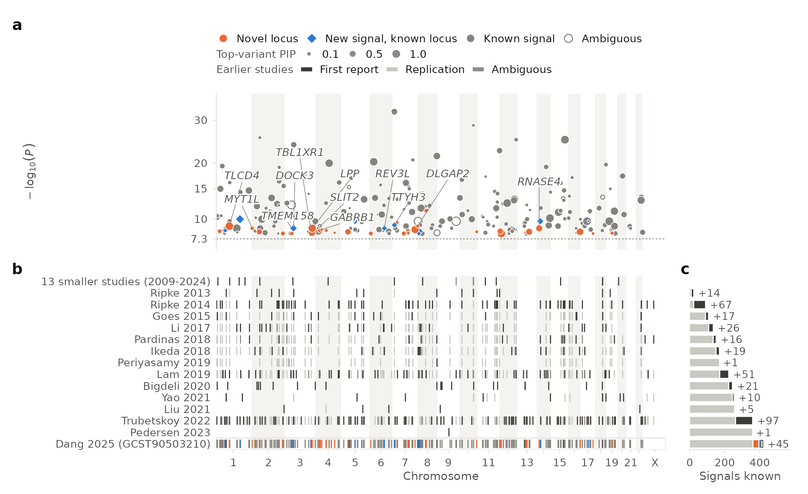

Which signals of your GWAS are actually new?
locusmatch compares the fine-mapped signals of a genome-wide association study with every earlier study of the trait, labels each one, and draws the result as a single genome-wide signal map that can replace the Manhattan plot.
Preparing the app in your browser
locusmatch runs R inside this page, so nothing you upload leaves your computer. Read on while it loads.
- Downloading R (WebAssembly)
- Installing R packages
- Starting locusmatch
The problem
"Novel locus" usually means "far from a known hit"
GWAS papers call a locus new when its lead variant is more than some distance from, or in low linkage disequilibrium with, every hit reported before. That compares single variants and assumes one causal variant per locus. As studies grow, loci with several independent signals become the rule, and the rule breaks in both directions.
New signals hidden in known loci
A second, independent association next to a known one is called "known", because a reported hit is nearby.
One signal, two names
The same signal reported through different lead variants in two studies can look like two loci, or two close signals like one.
No shared ledger
Each paper defines its loci its own way, so tracing when a signal was first found, and by whom, is manual work.
How it works
Compare signals, not lead variants
Fine-mapping turns each association signal into a credible set: the variants that probably contain the causal one, each with a posterior probability. locusmatch compares credible sets across studies.
Credible sets
From your fine-mapping (SuSiE, or PICS for top hits), and for earlier studies from the Open Targets Platform, which fine-maps the GWAS Catalog, FinnGen and UK Biobank.
Colocalisation
Two credible sets are the same signal when they colocalise: Bayes-factor coloc when both studies provide Bayes factors, otherwise the PIP-based approximation used by Open Targets.
A signal registry
Studies are added in publication order to a registry of signals with stable identifiers, so every signal keeps the study and date that first reported it.
The signal map
One figure: what is new, how precise, and how it was found
The signal map keeps the genomic axis of the Manhattan plot but draws signals instead of variants, so independent signals in one locus, fine-mapping resolution and novelty are visible at a glance, together with the history of discovery of the trait.

What you need
Your credible sets, or nothing at all
- Earlier studies: search a trait or paste GWAS Catalog, FinnGen or UK Biobank accessions, then filter by year, ancestry, study kind and number of cases. Or upload your own.
- Your GWAS: a table of credible sets with
cs_id,chrom,pos(GRCh38),variant_idandpip; optionally log Bayes factors, p-values and gene labels. Or pick a published study. - Results: the interactive map, a table of your signals with their labels, and the full registry; figures as PNG or PDF, tables as TSV.
Data & privacy
Runs entirely in your browser
- The app is R compiled to WebAssembly (webR, Shinylive). There is no server: files you upload are read on your computer and are not sent anywhere.
- Earlier studies come from the Open Targets Platform API; those requests contain only trait names, study accessions and credible-set identifiers.
- Methods: colocalisation (coloc; Giambartolomei et al. 2014, Wallace 2021), fine-mapping (SuSiE; Wang et al. 2020, Zou et al. 2022; PICS; Farh et al. 2015). Credible sets and locus-to-gene predictions from Open Targets, studies from the GWAS Catalog.